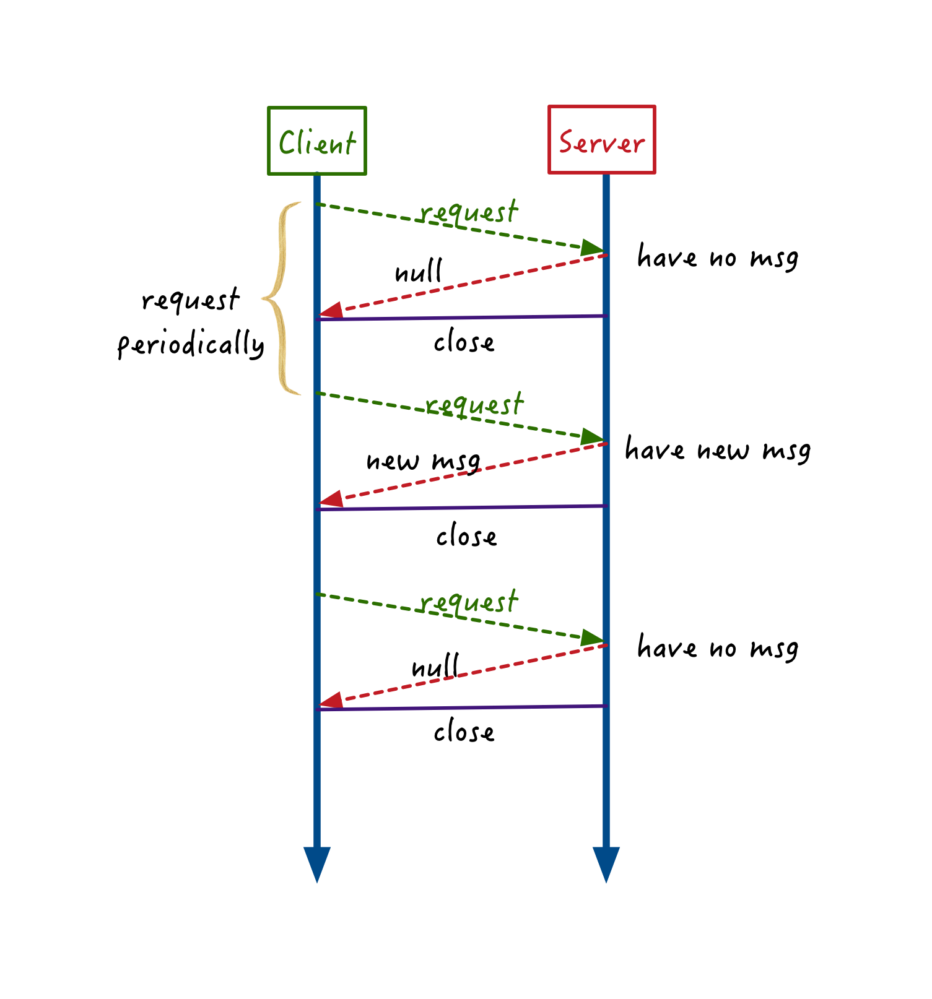
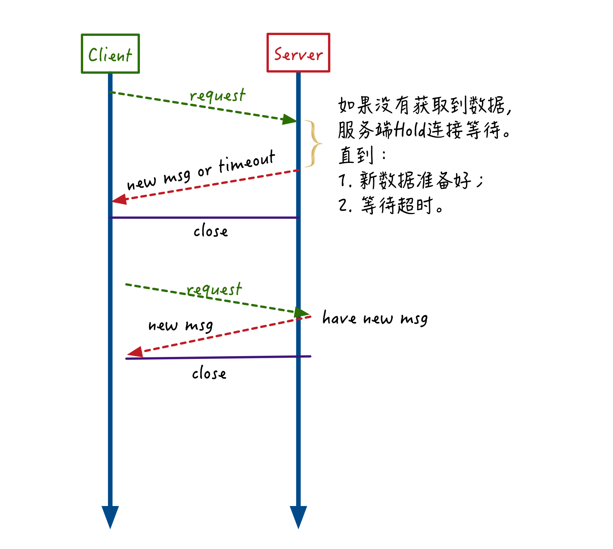
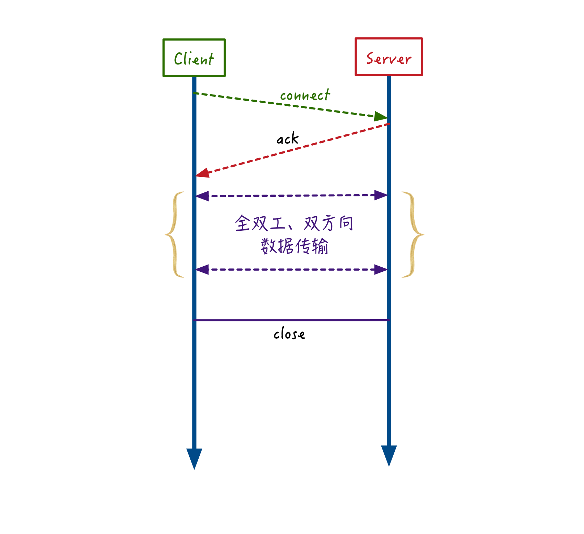

- 00 开篇词 搞懂“实时交互”的IM技术，将会有什么新机遇？.md.html
- 01 架构与特性：一个完整的IM系统是怎样的？.md.html
- 02 消息收发架构：为你的App，加上实时通信功能.md.html
- 03 轮询与长连接：如何解决消息的实时到达问题？.md.html
- 04 ACK机制：如何保证消息的可靠投递？.md.html
- 05 消息序号生成器：如何保证你的消息不会乱序？.md.html
- 06 HttpDNS和TLS：你的消息聊天真的安全吗？.md.html
- 07 分布式锁和原子性：你看到的未读消息提醒是真的吗？.md.html
- 08 智能心跳机制：解决网络的不确定性.md.html
- 09 分布式一致性：让你的消息支持多终端漫游.md.html
- 10 自动智能扩缩容：直播互动场景中峰值流量的应对.md.html
- 11 期中实战：动手写一个简易版的IM系统.md.html
- 12 服务高可用：保证核心链路稳定性的流控和熔断机制.md.html
- 13 HTTP Tunnel：复杂网络下消息通道高可用设计的思考.md.html
- 14 分片上传：如何让你的图片、音视频消息发送得更快？.md.html
- 15 CDN加速：如何让你的图片、视频、语音消息浏览播放不卡？.md.html
- 16 APNs：聊一聊第三方系统级消息通道的事.md.html
- 17 Cache：多级缓存架构在消息系统中的应用.md.html
- 18 Docker容器化：说一说IM系统中模块水平扩展的实现.md.html
- 19 端到端Trace：消息收发链路的监控体系搭建.md.html
- 20 存储和并发：万人群聊系统设计中的几个难点.md.html
- 21 期末实战：为你的简约版IM系统，加上功能.md.html
- 22 答疑解惑：不同即时消息场景下架构实现上的异同.md.html
- 结束语 真正的高贵，不是优于别人，而是优于过去的自己.md.html
- 捐赠
03 轮询与长连接：如何解决消息的实时到达问题？
你好，我是袁武林。
我在前面第一篇文章中，从使用场景的需求方面，讲到了IM系统的几个比较重要的特性。其中之一就是“消息到达的实时性”。
实时性场景是所有的IM系统绕不开的话题，为了支持互联网的“实时互联”的概念，大部分的App都需要实时技术的支持。
我们现在使用的聊天类App、直播互动类App都已经在实时性方面做得很好了，消息收发延迟基本都能控制在毫秒级别。
当然这一方面得益于快速发展的移动网络，让网络延迟越来越低、网络带宽越来越高；另一个重要原因是：社交网络App在实时性提升方面的技术，也在不断升级迭代。
实时性主要解决的问题是：当一条消息发出后，我们的系统如何确保这条消息最快被接收人感知并获取到，并且尽量让耗费的资源较少。这里关键的几个点是：最快触达，且耗费资源少。
想好了吗？下面我们来看一看，IM在追求“消息实时性”的架构上，所经历过的几个代表性阶段。
短轮询场景
在PC Web的早期时代，对于数据的获取，大部分应用采用一问一答的“请求响应”式模式，实际上，像现在我们浏览大部分门户网站的新闻，以及刷微博其实都是采用的“请求响应”模式。
但这种依赖“手动”触发的模式，在即时消息系统中当有新消息产生时并不能很好地感知并获取到，所以明显不适用于对实时性要求高的场景。
因此，这个时期的IM软件很多采用了一种“短轮询”的模式，来定期、高频地轮询服务端的新消息。
在短轮询模式中，服务器接到请求后，如果有新消息就会将新消息返回给客户端，如果没有新消息就返回空列表，并关闭连接。
这种短轮询的方式就好像一位焦急等待重要信件的人，每天骑车跑到家门口的邮局去问是否有自己的信件，有就拿回家，没有第二天接着去邮局问。

作为从一问一答的请求响应模式孵化出来的短轮询模式，具有较低的迁移升级成本，比较容易落地。但劣势也很明显：
- 为了提升实时性，短轮询的频率一般较高，但大部分轮询请求实际上是无用的，客户端既费电也费流量；
- 高频请求对服务端资源的压力也较大，一是大量服务器用于抗高频轮询的QPS（每秒查询率），二是对后端存储资源也有较大压力。
因此，“短轮询”这种方式，一般多用在用户规模比较小，且不愿花费太多服务改造成本的小型应用上。
长轮询场景
正是由于“短轮询”存在着高频无用功的问题，为了避免这个问题，IM逐步进化出“长轮询”的消息获取模式。
长轮询和短轮询相比，一个最大的改进之处在于：短轮询模式下，服务端不管本轮有没有新消息产生，都会马上响应并返回。而长轮询模式当本次请求没有获取到新消息时，并不会马上结束返回，而是会在服务端“悬挂（hang）”，等待一段时间；如果在等待的这段时间内有新消息产生，就能马上响应返回。
这种方式就像等待收信的人每天跑到邮局去问是否有自己的信件，如果没有，他不是马上回家，而是在邮局待上一天，如果还是没有就先回家，然后第二天再来。

比较之下，我们会发现，长轮询能大幅降低短轮询模式中客户端高频无用的轮询导致的网络开销和功耗开销，也降低了服务端处理请求的QPS，相比短轮询模式而言，显得更加先进。
长轮询的使用场景多见于： 对实时性要求比较高，但是整体用户量不太大。它在不支持WebSocket的浏览器端的场景下还是有比较多的使用。
但是长轮询并没有完全解决服务端资源高负载的问题，仍然存在以下问题。
服务端悬挂（hang）住请求，只是降低了入口请求的QPS，并没有减少对后端资源轮询的压力。假如有1000个请求在等待消息，可能意味着有1000个线程在不断轮询消息存储资源。
长轮询在超时时间内没有获取到消息时，会结束返回，因此仍然没有完全解决客户端“无效”请求的问题。
服务端推送：真正的边缘触发
短轮询和长轮询之所以没法做到基于事件的完全的“边缘触发（当状态变化时，发生一个IO事件）”，这是因为服务端在有新消息产生时，没有办法直接向客户端进行推送。
这里的根本原因在于短轮询和长轮询是基于HTTP协议实现的，由于HTTP是一个无状态协议，同一客户端的多次请求对于服务端来说并没有关系，也不会去记录客户端相关的连接信息。
因此，所有的请求只能由客户端发起，服务端由于并不记录客户端状态，当服务端接收到新消息时，没法找到对应的客户端来进行推送。
随着HTML5的出现，全双工的WebSocket彻底解决了服务端推送的问题。
- 这就像之前信件处理的逻辑，等待收信的用户不需要每天都跑到邮局去询问，而只要在邮局登记好自己家里的地址。等真正有信件时，邮局会派专门的邮递员按照登记的地址来把信送过去。
同样，当他需要写信给别人时，也只需要填好收件人地址，然后把信交给邮递员就可以了，不需要再自己跑邮局。
WebSocket
WebSocket正是一种服务端推送的技术代表。
随着HTML5的出现，基于单个TCP连接的全双工通信的协议WebSocket在2011年成为RFC标准协议，逐渐代替了短轮询和长轮询的方式，而且由于WebSocket协议获得了Web原生支持，被广泛应用于IM服务中，特别是在Web端基本属于IM的标配通信协议。
和短轮询、长轮询相比，基于WebSocket实现的IM服务，客户端和服务端只需要完成一次握手，就可以创建持久的长连接，并进行随时的双向数据传输。当服务端接收到新消息时，可以通过建立的WebSocket连接，直接进行推送，真正做到“边缘触发”，也保证了消息到达的实时性。
WebSocket的优点是：
- 支持服务端推送的双向通信，大幅降低服务端轮询压力；
- 数据交互的控制开销低，降低双方通信的网络开销；
- Web原生支持，实现相对简单。
TCP长连接衍生的IM协议
除了WebSocket协议，在IM领域，还有其他一些常用的基于TCP长连接衍生的通信协议，如XMPP协议、MQTT协议以及各种私有协议。
这些基于TCP长连接的通信协议，在用户上线连接时，在服务端维护好连接到服务器的用户设备和具体TCP连接的映射关系，通过这种方式客户端能够随时找到服务端，服务端也能通过这个映射关系随时找到对应在线的用户的客户端。
而且这个长连接一旦建立，就一直存在，除非网络被中断。这样当有消息需要实时推送给某个用户时，就能简单地通过这个长连接实现“服务端实时推送”了。
但是上面提到的这些私有协议都各有优缺点，如：XMPP协议虽然比较成熟、扩展性也不错，但基于XML格式的协议传输上冗余比较多，在流量方面不太友好，而且整体实现上比较复杂，在如今移动网络场景下用得并不多。
而轻量级的MQTT基于代理的“发布/订阅”模式，在省流量和扩展性方面都比较突出，在很多消息推送场景下被广泛使用，但这个协议并不是IM领域的专有协议，因此对于很多IM下的个性化业务场景仍然需要大量复杂的扩展和开发，比如不支持群组功能、不支持离线消息。
因此，对于开发人力相对充足的大厂，目前很多是基于TCP（或者UDP）来实现自己的私有协议，一方面私有协议能够贴合业务需要，做到真正的高效和省流；另一方面私有协议相对安全性更高一些，被破解的可能性小。目前主流的大厂很多都是采用私有协议为主的方式来实现。
小结
这一篇我们介绍了即时消息服务中是如何解决“消息实时性”这个难题。
为了更好地解决实时性问题，即时消息领域经历过的几次技术的迭代升级：
- 从简单、低效的短轮询逐步升级到相对效率可控的长轮询；
- 随着HTML5的出现，全双工的WebSocket彻底解决了服务端推送的问题；
- 同时基于TCP长连接衍生的各种有状态的通信协议，也能够实现服务端主动推送，从而更好解决“消息收发实时性”的问题。
最后给你留一个思考题，TCP长连接的方式是怎么实现“当有消息需要发送给某个用户时，能够准确找到这个用户对应的网络连接”？
你可以给我留言，我们一起讨论，感谢你的收听，我们下期再见。
© 2019 - 2023 Liangliang Lee. Powered by gin and hexo-theme-book.